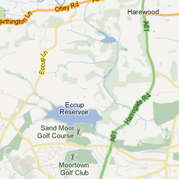
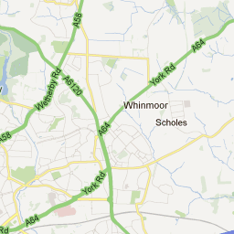

Google Maps examples - polygons
[
Personal home page
|Geog5870/1 examples]
Loading...


Map Data
Map data ©2011 Google
-
Terms of Use
Map Data
Map data ©2011 Google
Map
Terrain
Satellite
45°
Labels
This example looks at the process of adding a polygon